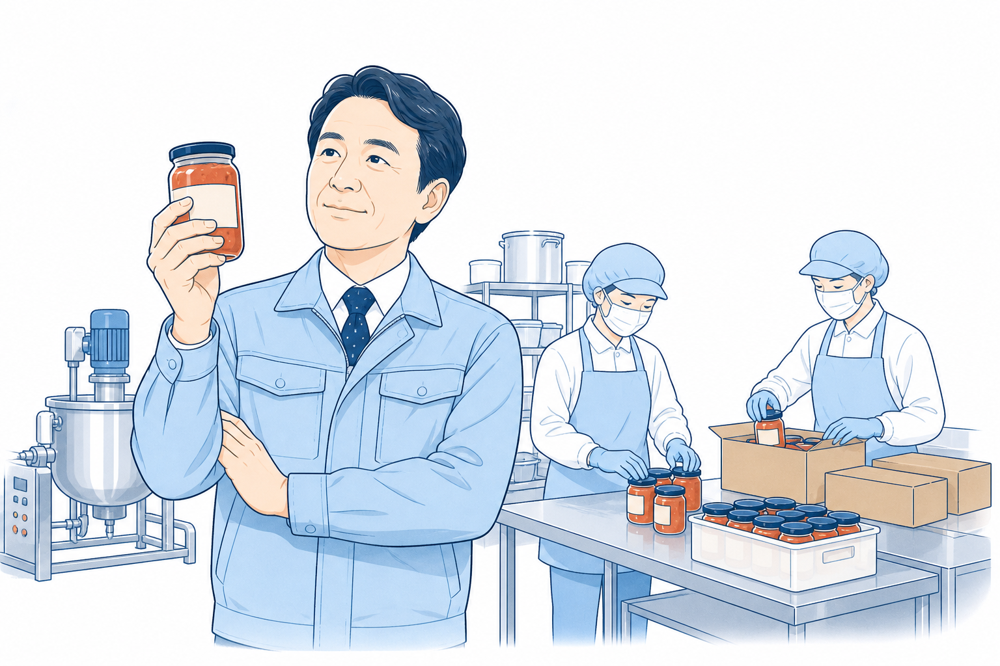
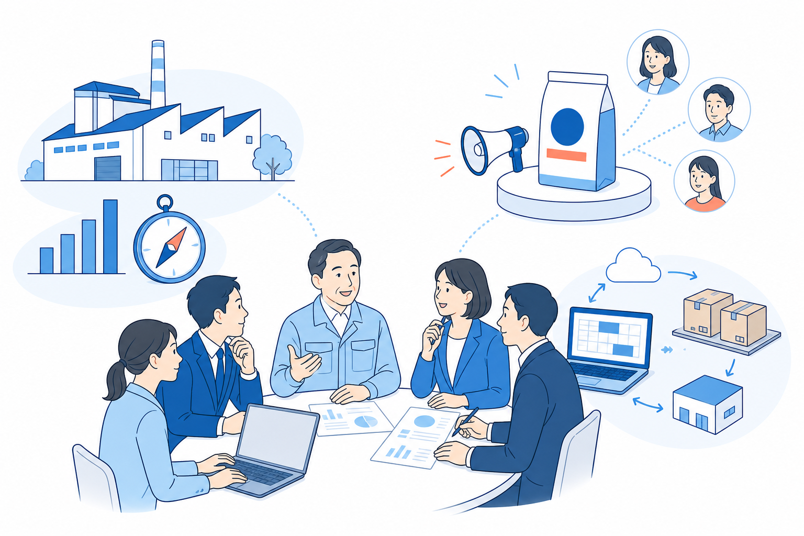
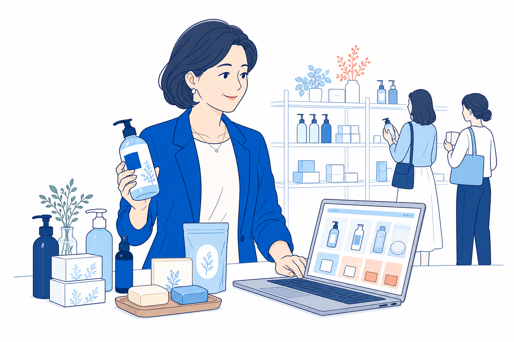
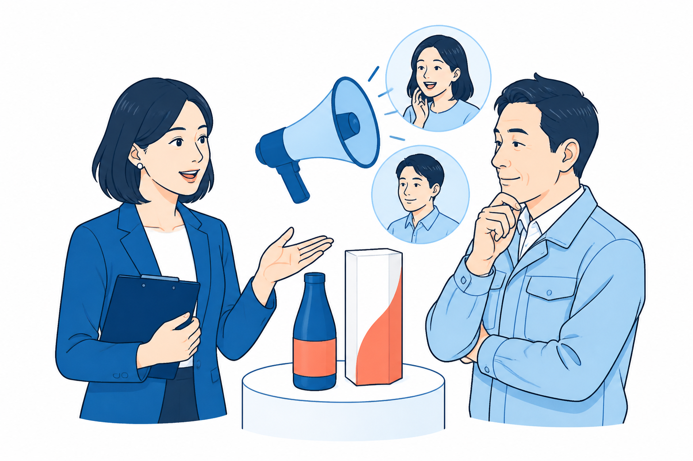
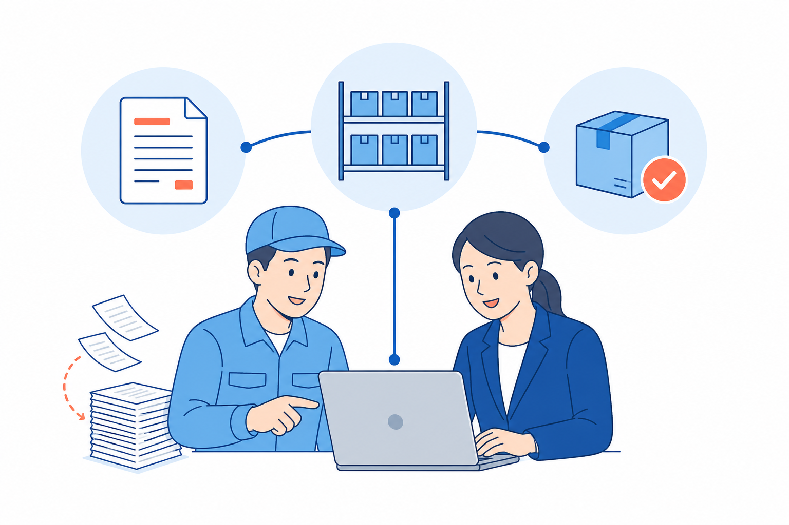
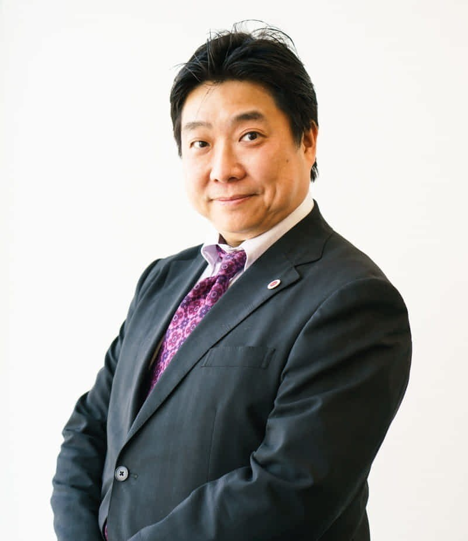

ものづくり企業の経営者
売れているのに、
利益が残らない。
商品ごとの採算や投資の順番を整理し、利益が残る事業へ変えたい。
商品をつくる・売る会社の
経営者・後継者の方へ
経営 × ブランディング × IT
各分野の専門家がひとつのチームとなり、
提案から実行まで支援します。
初回の相談・診断は無料です

経営ブランドIT課題を、部分ではなく全体から考える
売上、利益、商品の伝え方、日々の仕事。
ひとつだけを変えても、会社全体はなかなか変わりません。
こんな課題を、抱えていませんか？

ものづくり企業の経営者
商品ごとの採算や投資の順番を整理し、利益が残る事業へ変えたい。

販路を広げたい経営者
商品の価値を明確にし、選ばれる見せ方と売り方をつくりたい。
会社を引き継ぐ後継者
大切な強みを受け継ぎながら、次の時代に合う会社へ変えたい。
Amazing Interestの強み・差別化ポイント
利益・事業の視点で課題を整理。取り組む順番を決め、改善の実行を支えます。

商品の価値を見つめ直し、顧客に伝わる見せ方・売り方を形にします。

現場の仕事に合わせて、受注・顧客・在庫などの手間を減らす仕組みをつくります。
ひとつの方針で、提案から実行まで支援します。
専門家紹介

ブランディング・マーケティング
大学卒業後、大手広告会社で国内外のさまざまなキャンペーンを担当。2011年に起業し、自動車整備工場の経営も経験しました。現在は、ブランド・マーケティング・クリエイティブの発想をもとに、事業主へのアドバイザリー業務を中心に活動しています。
企業の組織に入り、課題の発見、解決策の提案、プロジェクトの立ち上げ、進捗管理、事業主へのフィードバックまで伴走します。
個別の依頼から、チームでの支援へ
| 比較するポイント | 分野ごとに 個別に依頼する場合 | Amazing Interest |
|---|---|---|
| 課題の見方 | 依頼した分野を軸に相談 | 経営・ブランド・ITから 多角的に検討 |
| 提案のつながり | 各社の提案を 自社で組み合わせる | 専門家が連携し、 ひとつの方針へ |
| 実行の進め方 | 各社と進行・役割を調整 | 提案から実行まで チームで支援 |
各分野を別々の会社に依頼する場合との比較です。支援内容は会社・契約によって異なります。
ご相談から実行まで
気になることをお聞かせください。
3つの視点から課題を整理します。
優先順位と進め方を明確にします。
合意した内容を専門家が支えます。
初回の相談・診断は無料です。
調査・制作・開発などは別途お見積りし、ご納得いただいてから進めます。
はい。気になっていることから一緒に整理します。
はい。相談だけでも構いません。有料の支援を申し込むかは、お見積りを見てからお決めいただけます。
はい。今の取り組みを大切にしながら、足りないところを一緒に考えます。
初回相談・診断 無料
「何から始めるべきか」
そのご相談からで大丈夫です。